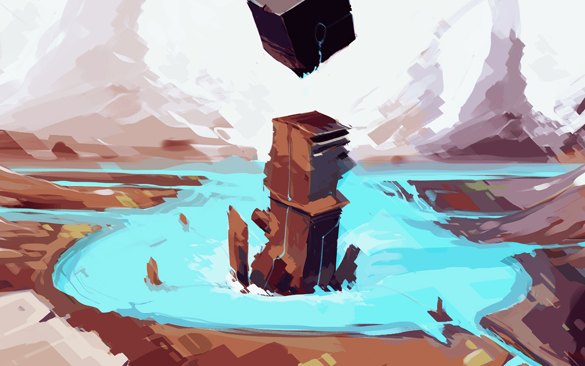
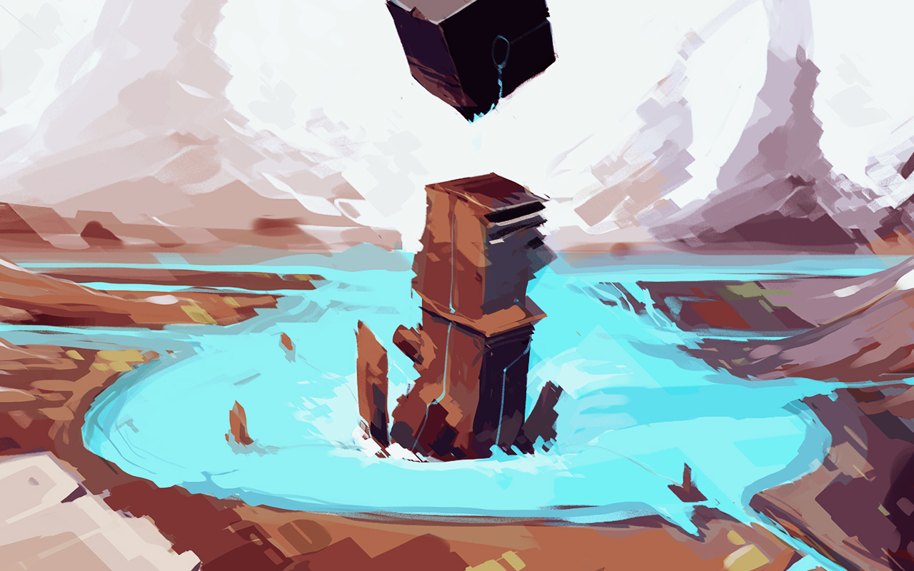

The Neauismetic albums are audio diaries from the early ages of the Neauismetica.
 es gulf sunflowers — La Nuit Blanche, Montreal06D13
es gulf sunflowers — La Nuit Blanche, Montreal06D13
 damoiseau canalx — Damoiseau et Canalx Release08R02
damoiseau canalx — Damoiseau et Canalx Release08R02
 the sixth season — Sixth Season Release05T01
vetetrandes lettres — Vetetrandes Lettres Release06N09
the sixth season — Sixth Season Release05T01
vetetrandes lettres — Vetetrandes Lettres Release06N09
 from saharaphorest — From Saharaphorest Release05Z01
from saharaphorest — From Saharaphorest Release05Z01
 ehrivevnv studies — Ehrivevnv Studies Release06V04
ehrivevnv studies — Ehrivevnv Studies Release06V04
incoming the sixth season vetetrandes lettres illustration